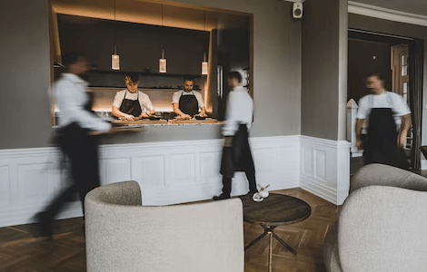
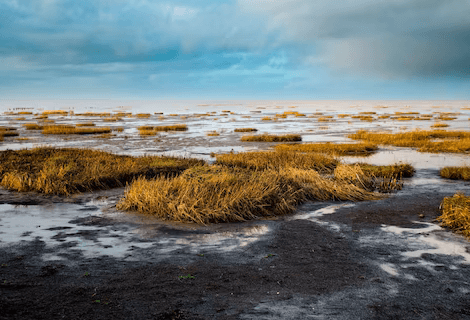

NATIONAL GEOGRAPHIC
The Great Danish Cake Off how a 21-cake buffet defines southern Jutland, Denmark
TRAVEL
- 
- 
Crouched on a salt marsh, I knock back schnapps as the tide creeps towards me. My hand hovers over sea wormwood, a botanical I’m collecting on a tour of the coastline. Klaus and Jan, my guides, pull bottles of homemade firewater from their basket and we sample the spirits as we nibble the very plants and berries that infuse them. Wormwood has an intriguing, medicinal taste, so I add it to my bag.
Schnapps, here, requires a base spirit aquavit or vodka and patience, to let it absorb the flavour of whatever you add. In this world of watery planes, that could be anything from sea lavender to rosehips and pine. I’m leaning towards a wormwood and willow combo that raises Jan’s eyebrows.
We’re foraging on a causeway island in the Danish peninsula Jutland. From here, it’s half an hour south to Germany, 40 minutes east to the Baltic Sea and just under four hours east to Copenhagen. Most people know Jutland only for Billund: a town at the peninsula’s heart and the birthplace of Lego.
North of the Lego line, Jutland has quietly gained a name for innovative, Michelin starred restaurants, such as Frederikshøj and Gastromé in Aarhus. But head south and cake sets the culinary pace. Every part of Denmark loves cake, which is eaten between meals rather than as pudding. But Southern Jutland is synonymous with it, thanks to the /sønderjysk kaffebord/, or ‘South Jutland coffee table’. This sumptuous spread traditionally features 21 varieties of cake: seven with yeast, seven with cream and seven hard, to be eaten in that order.
A shortage of schnapps led to the kaffebord’s creation. When Prussian-Austrian forces occupied Southern Jutland in 1864, they refused alcohol licences to community halls, to stop Danes meeting over ‘coffee punch’ (coffee and aquavit). Defiant locals swapped booze for cake, and continued to gather amid tables piled high with sweet bakes. Long after the conflict abated, the practice has continued, with recipes handed down through generations.
Visitors’ versions are offered once a month, or in certain places weekly during the summer season. Hohenwarte, a former cowshed in Højer, hosts a kaffebord on the first Sunday of each month. Cakes cover the table like a particularly competitive WI stand: pomle (buttered cardamom buns), lemony potato cake, brødtorte (a surprisingly light ryebread cake, sandwiched with sharp blackcurrant and unsweetened cream) and lard biscuits (tastier than they sound). Fanciful names reveal details of local life: maternity cake is a nine-layer, redcurrant biscuit affair, designed to keep new mums going, while ‘good advice galettes’ are made by mothers and daughters sharing confidences.
The flavours throughout are simple: candied peel, cream, honey even hazelnuts are left unroasted. And the cake procession ends with the snappily titled ‘nothing’: a playful, almond meringue biscuit answer to the question, ‘What more can you eat?’
Trying some of each is respectful, but 21 cakes is something of an undertaking. And while the kaffebord provides continuity with the past, not every South Jutlander feels an update is a bad thing: some venues offer a mere 14-cake version. Alternatively, you can order solitary slices of brøtorte in cafes.
“I find a full 21-cake kaffebord a bit much,” admits Jan my Wadden Sea Centre guide as we take a break from foraging the coast to sip coffee and gaze at glinting mudflats. Jan is a spry man who looks like he has never overeaten cake in his life. And for his colleague Klaus, the difference between a modest local kaffebord and one laid on for visitors is that the former comes with a healthy helping of hygge, that most Danish idea of convivial cosiness.
Sometimes, however, innovation strikes. In Tønder, bakers launched an annual kaffebord route, which makes 21 stops around the town. Tønder is where cinnamon and cardamom first arrived from the Caribbean in the Middle Ages; one way or another, the sea brings many of Denmark’s flavours. At Esbjerg, where the Man Meets the Sea sculpture watches over port waters, the Mundheld restaurant serves delicate fish dishes and a spectacular Danish cheeseboard. From there, a 10-minute ferry ride takes you to Fanø island and the Fanø Bryghus brewhouse, to sample its brooding Coffee Puncher stout. Towards the island’s southern tip, at the Sønderho Kro hotel and restaurant, children play in the garden while parents enjoy plates of pickled herring. My heart races with the powerful hit of liquorice in its Italian meringue and rhubarb compote.
Back on the mainland, Gram Castle Jutland’s Middle Ages masterpiece hosts one of the region’s biggest kaffebords. Owner Sanne Brodersen welcomes up to 350 people here each month, serving a local baker’s creations. “Cake is always a good thing,” she notes, sagely. “But it’s also good for a small community like ours to show our traditions. It’s where we have a root. A kaffebord has many levels of meaning; it’s a way of being in the world and knowing where you belong.” She puts her fork down and declares, conclusively, “You’re never just eating cake.”
Comments :
- john Very good
- john Very good
Leave a Reply
Your email address will not be published. Required fields are marked*
Related posts:
-
 This New York State rail trail isn’t just epic it’s also accessible
This New York State rail trail isn’t just epic it’s also accessible“No bike trail parking” reads the sign, hand-painted in spindly letters on a red barn in pastoral North Chatham, New York. On a Tuesday morning, off a side street few would think to plant a car on
View article -
 New West Virginia mountain biking trails go mild, not wild
New West Virginia mountain biking trails go mild, not wildMountain biking, like other outdoor activities, has surged in popularity during the COVID-19 pandemic. Bike sales went up more than 150 percent in 2020, and some mountain bike trails have experienced
View article -
 This trail may be the best way to see New England’s fall colors
This trail may be the best way to see New England’s fall colorsEach year, millions flock to the Berkshires in western Massachusetts seeking a couple days of sugar maple tree therapy. The region’s scenic allure peaks in the fall, when the hardwood forests transform into a palette
View article